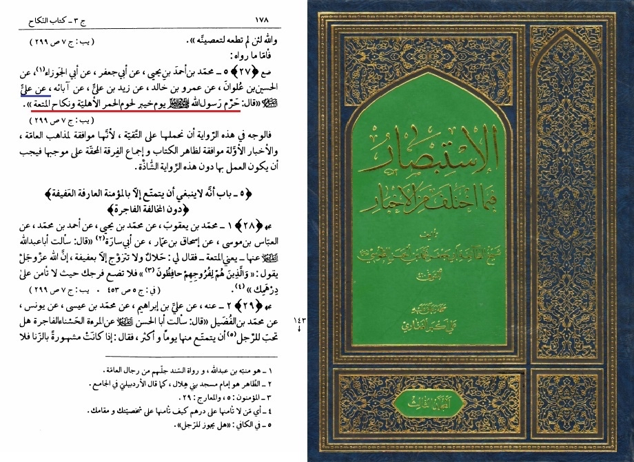

It was Narrated by Ali:
I said to Ibn Abbas, During the battle of Khaibar the Prophet (ﷺ) forbade Al Mutah and the eating of
donkey's meat.
Source: Sahih al Bukhari 5115
It was reported by Ali, peace be upon him, he said:
The Messenger of God, forbade donkey meat and Al Mutah
tusi page 142
